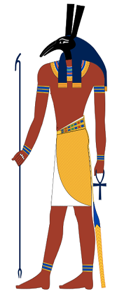
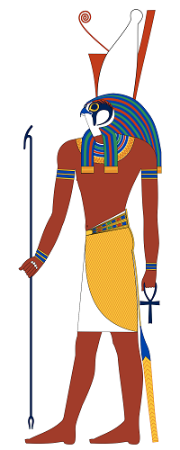
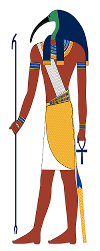
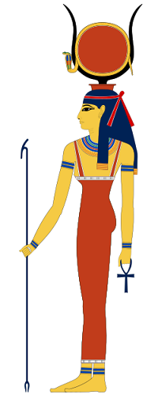

Egyiptom istenei
A film jelenleg elérhető több streamingszolgáltató kínálatában:
- Netflix: Ausztrália and Kanada.
- Prime Video: Egyesült Királyság, Kanada, Ausztrália és USA.
- fuboTV / MovieSphere+: USA.
- Sky TV: Egyesült Királyság.
Főbb szereplők:
Gerard Butler
Londonba ment és néhány hónapig alkalmi munkákból tartotta el magát. A Trainspotting színpadra alkalmazott változatában már a második próba után megkapta a főszerepet, és eljátszhatta a heroinfüggő Rentont - azt a szerepet, amelyért a jogi pályát a színészetre cserélte.

PORT ...Nikolaj Coster-Waldau
Dániában született és a Danish National School of Theatre-ben szerzett diplomát. Jelentősebb filmszerepe a Nightwatch, A Sólyom végveszélyben. A legismertebb szerepe azonban Jaime Lannister a Trónok harca című sikersorozatban.

PORT ...Chadwick Bosemank
A részben Sierra Leone-i származású színész Dél-Karolinában született, a színészettel kamaszkorában ismerkedett meg. Pályafutása produkciói: A 42-es, az Egyiptom istenei, az Amerika Kapitány: Polgárháború, a Fekete Párduc, a 21 híd.

PORT ...Elodie Yung
Párizsban született és jogot végzett a Pari¬si Egyetemen (La Sorbonne). A London Academy of Music and Dramatic Art drámai képzésén tanulta ki a színészetet. Ismertebb szerepei: Daredevil és The Defenders sorozatokban, The Girl with the Dragon Tattoo, The Cleaning Lady. Kép: hathor.png

PORT ...